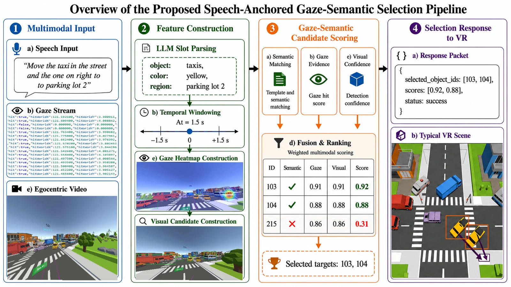
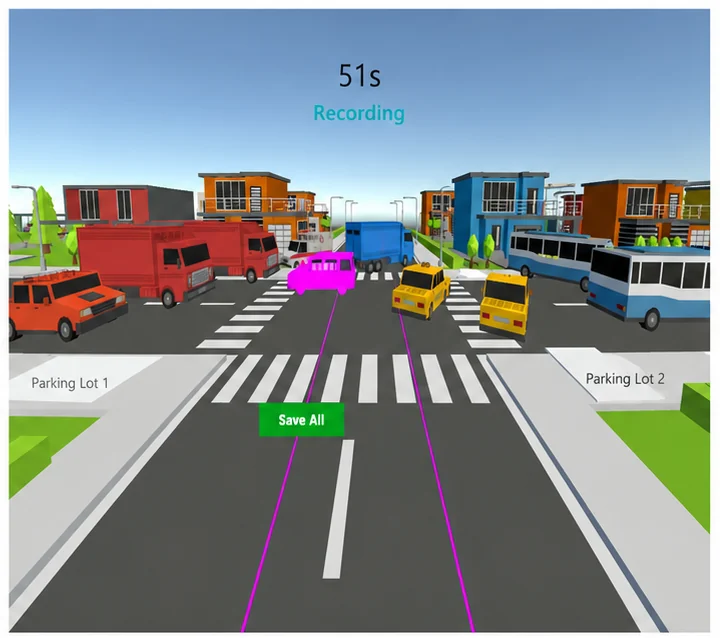
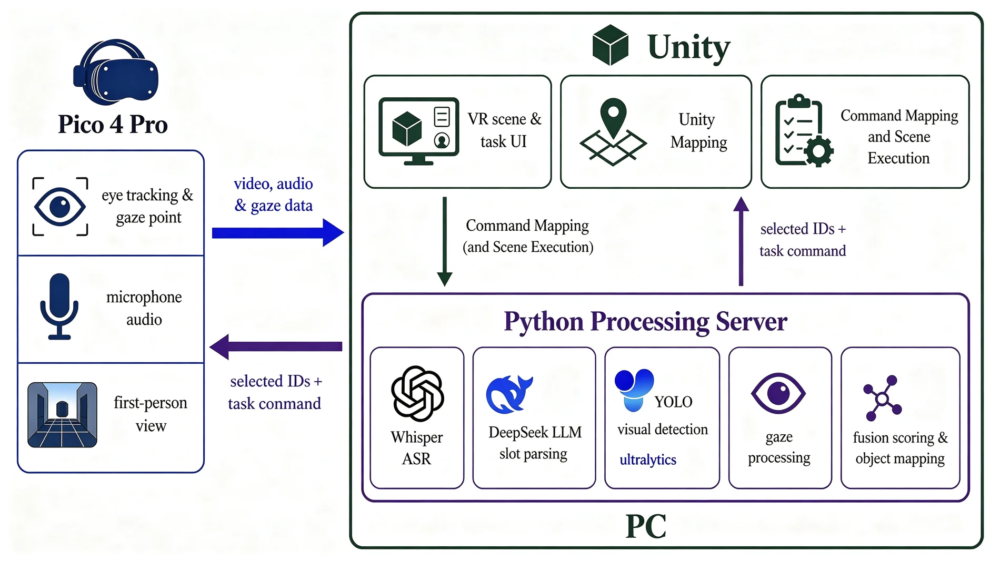

Speech anchor & slot parsing
The utterance is parsed into a task representation Tk = (ak, Qk) with target slots qj = (rj, cj, αj, tjs, tje) — target phrase, normalised category, attribute constraints, and start/end times.
1Tianjin University of Technology · 2National Key Laboratory of Brain-Computer Interface Technology · 3Defense Innovation Institute, AMS · 4Tianjin Artificial Intelligence Innovation Center
∗Corresponding author: yinyuebuaa@126.com
In dense VR scenes filled with near-identical objects, pointing at one target at a time breaks down. We treat selection as a task-level intent mapping problem: the spoken instruction anchors a temporal window in which gaze, visual candidates, and constrained language parsing are fused into a ranked set of grounded scene objects.

As VR interaction expands into productivity-oriented scenarios such as collaborative design and assembly training, object selection is shifting from single-object pointing toward task-level intent mapping. However, existing techniques still treat selection largely as an isolated pointing action, with limited support for robust multimodal fusion in dense or visually similar 3D scenes.
To fill this gap, this paper presents a multimodal task-level selection method for dense and similar objects in VR. The method uses speech as an anchor to integrate gaze, visual object candidates, and constrained language parsing for task-level object inference. The effectiveness of the proposed method was evaluated through an outdoor VR scene relocation task with 20 participants.
User study results showed comparable task completion time, favorable SUS scores, higher object-level selection accuracy, and lower perceived physical demand compared with ray casting. Ablation studies further validated the superiority of the multimodal fusion approach over single-modality methods. These findings suggest our method could effectively complement ray casting by reducing physical fatigue and enabling natural, novice-friendly selection in dense VR scenes.
Keywords: virtual reality object selection multimodal interaction gaze large language model

Given speech, first-person video, and gaze trajectories, the system constructs speech-anchored windows, scores visual candidates with gaze and semantic constraints, and outputs a ranked set of grounded scene objects.
The utterance is parsed into a task representation Tk = (ak, Qk) with target slots qj = (rj, cj, αj, tjs, tje) — target phrase, normalised category, attribute constraints, and start/end times.
Each slot opens a window Rj = [tjs − Δ, tjs + Δ] around the target noun, collecting the gaze sample set Gj and the closest video frame fj∗.
YOLOv8-seg proposes candidates oij; a template-matching score sitemp = 0.7·IoU + 0.3·center binds each detection to a stable registered object ID.
Gaze accumulates into a heatmap over expanded object hot zones; the LLM supplies category and colour constraints. All four roles are fused into a single comprehensive score and ranked.
Si = ωgsigaze + ωssisem + ωtsitemp + ωcsiconf
All terms normalised to [0, 1]. Weights were fixed after development-stage pilot trials and held constant throughout the user study. When gaze or semantic evidence is unavailable, the corresponding term is down-weighted; candidates below threshold θ are marked uncertain.
The highest-scoring candidate per slot becomes the grounded object. For multi-slot instructions the result is Ok∗ = {(u1∗, S1∗), …, (uM∗, SM∗)}, mapped to registered scene objects and executed in Unity.
{
"selected_object_ids": [103, 104],
"scores": [0.92, 0.88],
"status": "success"
}
A within-subject design. Representative multimodal systems lacked compatible task-level designs or reproducible implementations, so the comparison baseline is controller ray casting on efficiency, object accuracy, and workload in dense VR scenes.
Ray: controller ray casting with trigger confirmation for targets and destinations.
Proposed: speech command + gaze; completion includes backend recognition, multimodal grounding, command return, and VR scene execution.
10 s instruction countdown, then a 20 s execution stage. Both methods share the same scene, target entities, and instructions.
Both methods were evaluated on object and destination-entity selection, without manual vehicle dragging.
Each participant completed M1–M5 under both conditions. Target objects are highlighted in the scene above; in the Proposed condition the instruction is spoken, not read.
Move the taxi in the middle and the taxi on the right to parking area 2.
Move red truck 1 and red truck 2 to parking area 1.
Move bus 1 and bus 2 to parking area 3.
Move the distant ambulance and the blue truck in the middle to parking area 3.
Move the leftmost car and the purple car at the intersection to parking area 1.
| Metric | Ray | Proposed | Difference |
|---|---|---|---|
| Completion time Tc | 7.7 ± 3.7 s N = 100 | 6.6 ± 2.6 s N = 99 | −1.1 s n.s., p = .054 |
| Object accuracy Accobj | 64.1% ± 21.7% N = 96 | 77.3% ± 14.8% N = 98 | +13.2 pp p < .001 |
| Strict task success Acctrial | 75 / 100 75% | 70 / 99 71% | −4 pp n.s., p = .442 |
| Head rotation speed | 46°/s N = 60 | 73°/s N = 55 | +27°/s descriptive |
| NASA–TLX total | 66.05 ± 19.65 | 42.25 ± 20.05 | −23.80 p = .0038 |
| Physical demand | 15.30 | 5.70 | −9.60 |
| SUS | — | 79.38 ± 14.60 | Proposed only |
Strict task success is all-or-nothing: any incorrect entity fails the trial. Occasional errors in the processing pipeline (speech recognition, semantic parsing, grounding) therefore bottleneck overall trial success, while the Proposed method still recovers far more correct objects per trial. That is why Accobj improves significantly even though Acctrial does not.
All analyses reuse the recorded Proposed-condition trials and the same object-level accuracy definition as the user study.
The Full Method reproduces the reported Proposed result. Every single-modality variant stays well below the fused system, and conflict handling alone contributes 5.8 pp.
Expansion parameter η = 0.15: the template box grows by a factor of 1.30 about its centre, then clips to the frame.
| Density | Accobj | Gaze hit rate | Slots |
|---|---|---|---|
| High | 81.9% | 48.3% | 20 |
| Medium | 74.2% | 26.8% | 39 |
| Low | 78.2% | 37.6% | 39 |
Semantic and visual evidence complement gaze when attention overlaps adjacent or visually similar objects. The study did not include a dedicated extreme-density stress test, so results are limited to the evaluated density conditions.
Six fixed weight combinations evaluated on the same recorded trials. All configurations sum to one; D is the main method.
| Config. | ωg | ωs | ωt | ωc | Accobj |
|---|---|---|---|---|---|
| A | 0.10 | 0.10 | 0.40 | 0.40 | 55.8% |
| B | 0.20 | 0.20 | 0.30 | 0.30 | 63.6% |
| C | 0.25 | 0.25 | 0.25 | 0.25 | 72.8% |
| D | 0.35 | 0.35 | 0.20 | 0.10 | 77.3% |
| E | 0.45 | 0.25 | 0.20 | 0.10 | 58.9% |
| F | 0.25 | 0.45 | 0.20 | 0.10 | 73.9% |
Balanced and nearly balanced gaze/semantic weighting (C, F, D) outperforms visual-confidence-heavy configurations (A, B), and heavily biased gaze weighting (E) loses accuracy.
Under the Proposed method head rotation speed was higher (73°/s vs 46°/s), yet NASA–TLX total and Physical Demand were lower. Higher head movement intensity did not translate into higher subjective physical burden: users acquired targets through natural gaze shifts and speech expression instead of sustained arm raising, fine ray aiming, and controller operation.
Some participants still valued the directness and explicit confirmation of ray casting — P15 preferred it because it felt closer to direct manipulation, and P13 described it as better suited to nearby precise selection. Preference depended on task context, target distance, object density, and desired control, which points toward task-dependent hybrid interaction design.
Reported evidence is limited to the outdoor vehicle-relocation scene evaluated here; the pipeline does not rely on vehicle-specific selection rules, but generalisability remains to be established.
Yuntong Zhang — conception, methodology, system implementation, experiments, data analysis, manuscript writing. Yue Yin — conception, supervision, methodology guidance, manuscript review. Yu Zhao — experiment support, manuscript review. Jiaxin Yu — system discussion, manuscript review. Liang Xie — supervision, resource support, manuscript review.
This work was supported in part by the National Natural Science Foundation of China under Grants 62332019 and 62576356, the National Key Research and Development Program of China under Grants 2023YFF1203900 and 2023YFF1203903, and the Beijing Nova Program under Grant 20240484513.
The manuscript is under review at Data Intelligence. Bibliographic details will be updated upon publication.
@article{zhang2026multimodal,
title = {Multimodal-Assisted Task-Level Selection for
Dense Similar Objects in Virtual Reality},
author = {Zhang, Yuntong and Yin, Yue and Zhao, Yu and
Yu, Jiaxin and Xie, Liang},
journal = {Data Intelligence},
year = {2026},
note = {Under review}
}Zhang, Y., Yin, Y., Zhao, Y., Yu, J., & Xie, L. (2026).
Multimodal-Assisted Task-Level Selection for Dense Similar
Objects in Virtual Reality. Data Intelligence. Under review.For the full manuscript, supplementary material, or dataset requests, please contact the corresponding author:
yinyuebuaa@126.com Source on GitHub
The full text is not hosted on this site while the manuscript is under review.